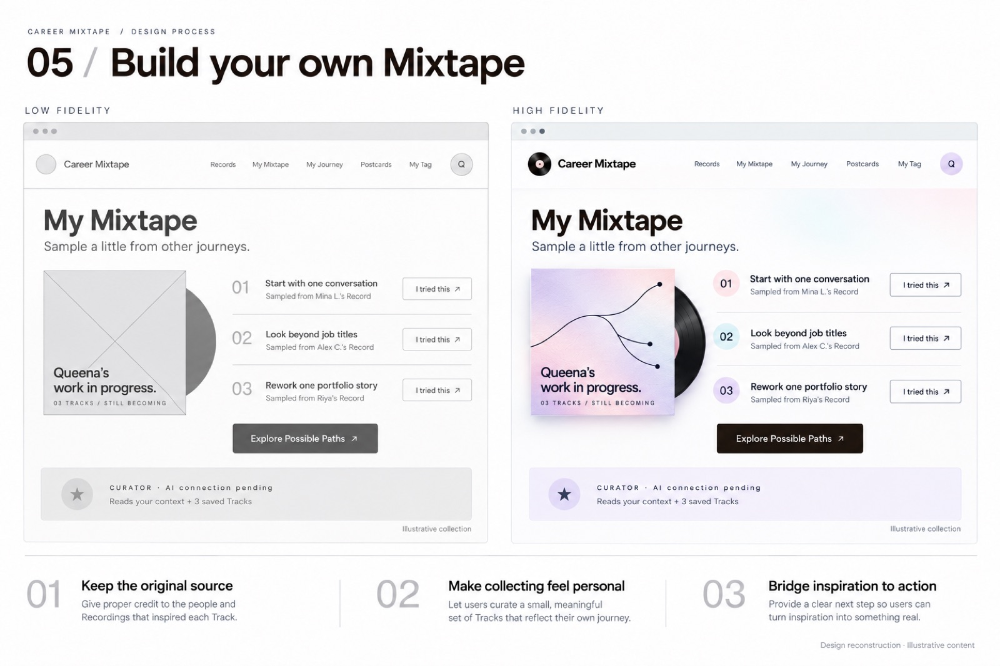
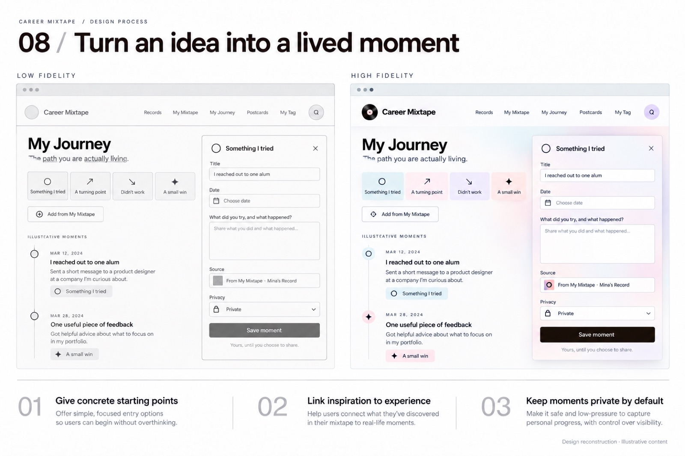

Career Mixtape
A place for international students to turn someone else’s career story into a next step they can try.
Open the prototype
My focus
Design research, information architecture, and the interaction from discovering a story to reflecting on a strategy.
Make the advice specific enough to try.
A career outcome says little about the choices that led there. Records show the story and its context so students can decide which part is relevant to them.
Turn a story into a track.
Students can take one strategy from a Record, save it to a personal Mixtape, and later reflect on how it worked in My Journey.
- Read a Record
- Save a Track
- Build a Mixtape
- Reflect in My Journey
Keep the source attached.
Each saved track shows where the idea came from and gives it a next action. The student can see both the strategy and the story behind it.

Give reflection its own place.
My Journey makes space for the student to record what they tried and what they learned from it.

What the prototype shows
The web prototype shows the story and collection structure using fictional examples. AI curation remains a proposed feature. A next test is whether a student can find one strategy and explain how they would try it.
Open the prototype